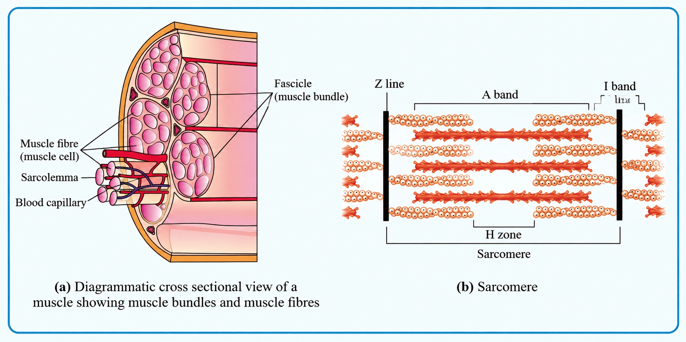
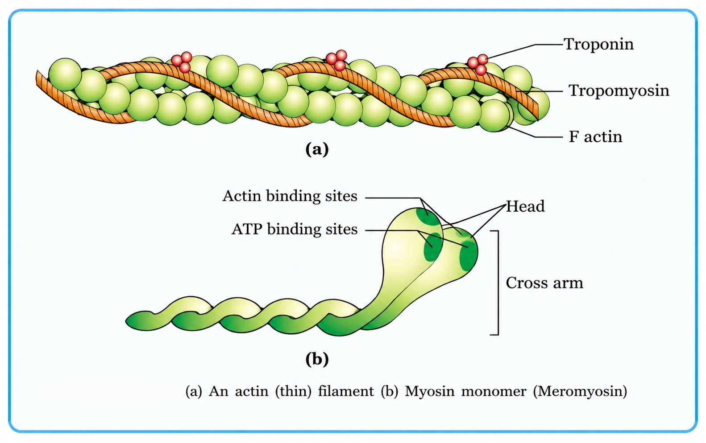
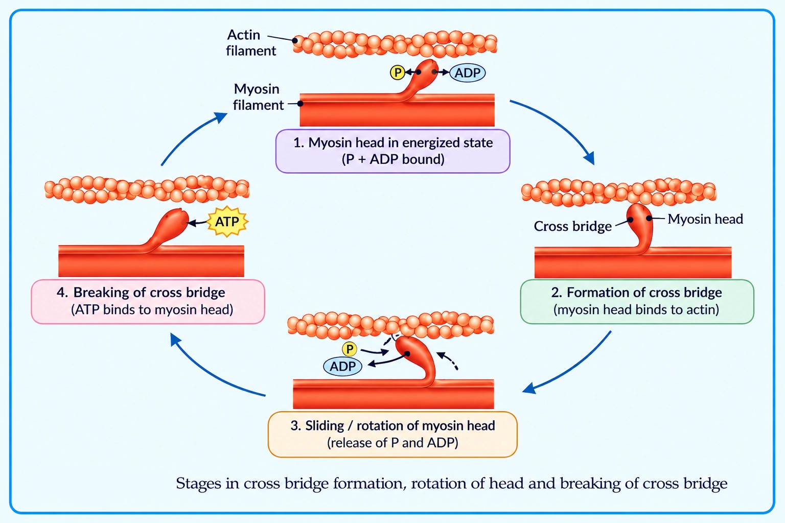

Biology
Locomotion and Movement
Movement = any positional/state change; Locomotion (as defined here) = voluntary movement causing change of place
MOVEMENT VS LOCOMOTION
📖Definition & Introduction
- Movement is any change in position/state of a body part or the whole organism.
- Locomotion is a type of movement that results in a change of place (the whole organism shifts from one place to another). In this exam-style definition, it is described as voluntary.
- Link: All locomotions are movements, but all movements are not locomotions.
- Movement may be internal or external; locomotion specifically refers to displacement of the whole organism from one place to another.
- Locomotory structures can have multiple roles, not only locomotion.
🖼️Diagram
🎯Key Concepts
- ✅Key distinction: change of place is mandatory for locomotion, not for movement.
- 🧠Locomotion is described here as voluntary (NCERT-style exam wording).
- 🧫Example of movement (not necessarily locomotion): streaming of protoplasm inside Amoeba (internal movement without ensured change of place).
- 🚶Examples of locomotion: walking, running, swimming, flying, climbing.
- 🔁Same structure, many functions: cilia/tentacles/limbs can aid feeding, posture, and locomotion.
🔎EXAMPLES TO WRITE IN EXAMS
- Movement (no change of place): streaming of protoplasm inside Amoeba; blinking; tongue/jaw movement.
- Movement by cell structures: cilia/flagella/tentacles can move (e.g., to move food/water current) even without whole-organism displacement.
- Locomotion: walking, running, swimming, flying, climbing (whole organism changes location).
- Humans: limbs help in posture change and also in locomotion.
⚙️WHY ANIMALS LOCOMOTE (PURPOSES)
- Search of food and shelter.
- Search of mate and reaching suitable breeding grounds.
- Seeking favourable climatic conditions (better survival).
- Escape from enemies/predators (avoid being eaten).
⚖️MOVEMENT vs LOCOMOTION
| Basis | Movement | Locomotion |
|---|---|---|
| Meaning | Any change in position/state | A type of movement that causes change of place (organism shifts from one place to another) |
| Voluntary? | May be voluntary or involuntary | Described here (NCERT-style) as voluntary movement |
| Scale | May involve a body part, a cell part, or the whole organism | Involves the whole organism shifting location |
| Result | May or may not change location | Changes location (change of place is essential) |
| Examples | Blinking, jaw/tongue movement, internal streaming of protoplasm | Walking, running, swimming, flying, climbing |
| Relation | Includes locomotion | Subset of movement |
✏️Solved Q&A
1
Amoeba shows streaming of protoplasm inside its body. Is this movement or locomotion? Justify.
Answer:
Streaming of protoplasm is a change in position/state within the body.
This internal streaming does not by itself ensure that the whole organism shifts from one place to another.
So, it is a movement; it is not necessarily locomotion unless it causes change of place.
Streaming of protoplasm is a change in position/state within the body.
This internal streaming does not by itself ensure that the whole organism shifts from one place to another.
So, it is a movement; it is not necessarily locomotion unless it causes change of place.
✓ It is movement (internal protoplasmic streaming). It is not necessarily locomotion because change of place is not ensured by streaming alone.
2
State whether each is movement, locomotion, or both: (i) blinking (ii) walking (iii) Paramecium cilia moving food.
Answer:
(i) Blinking: movement only; eyelids change position, no change of place.
(ii) Walking: both; it is movement that causes change of place.
(iii) Paramecium cilia moving food: movement; cilia beat to move food through cytopharynx (the same cilia can also enable locomotion when they move the organism).
(i) Blinking: movement only; eyelids change position, no change of place.
(ii) Walking: both; it is movement that causes change of place.
(iii) Paramecium cilia moving food: movement; cilia beat to move food through cytopharynx (the same cilia can also enable locomotion when they move the organism).
✓ (i) Movement only (ii) Both movement and locomotion (iii) Movement (feeding-related; the same cilia may also be used for locomotion).
⭐Important Points
- Write the core line: All locomotions are movements, but all movements are not locomotions.
- In exams, locomotion must mention change of place and is described here as voluntary.
- Give one non-locomotory movement example: streaming of protoplasm inside Amoeba.
- Locomotory structures may be multifunctional: Paramecium cilia, Hydra tentacles, human limbs.
- Common locomotion examples to list: walking, running, swimming, flying, climbing.
💡Memory Technique
“Mnemonic: LOCO = LOCAtion change”
📌Quick Recap
Movement: any change in position/state of a body part, cell part, or whole organism.Locomotion: movement that causes change of place (whole organism shifts from one place to another); described here as voluntary in exam wording.Relation: all locomotions are movements; all movements are not locomotions.Movement (non-locomotory) example: streaming of protoplasm inside Amoeba, blinking, jaw/tongue movement.Locomotion examples: walking, running, swimming, flying, climbing.Why animals locomote: food, shelter, mate, breeding ground, favourable climate, escape predators.
Amoeboid, ciliary and muscular movements in humans: mechanism + examples
TYPES OF MOVEMENT (17.1)
📖Definition & Introduction
- Types of movement in human body cells mainly include amoeboid, ciliary and muscular movements.
- Amoeboid movement: cell creeps by forming pseudopodia due to protoplasmic streaming.
- Ciliary movement: coordinated beating of cilia moves materials along tubular passages.
- Muscular movement: movement due to contraction of muscles; basis of limb and organ movements.
- Underlying control: movement needs cytoskeleton (microfilaments) or cilia or muscle fibres depending on type.
🖼️Diagram
Three major human movement types: amoeboid (pseudopodia), ciliary (beating cilia), muscular (contraction).
🎯Key Concepts
- 🧬Amoeboid movement is driven by cytoskeletal microfilaments and pseudopodia formation.
- 🫁Cilia on ciliated epithelium beat in a coordinated manner to move mucus/particles or ova.
- 💪Muscular movement uses the contractile property of muscles; produces movements of limbs, jaw, tongue.
- 🧫Examples commonly asked: macrophages, leucocytes (WBC), trachea, oviduct.
- 🧠Human locomotion requires coordinated activity of muscular, skeletal and neural systems.
🔎AMOEBOID MOVEMENT (PSEUDOPODIA + CYTOSKELETON)
- Occurs in specialised cells like macrophages and leucocytes (WBC).
- Cell forms temporary projections called pseudopodia and flows into them.
- Driven and supported by cytoskeletal microfilaments (actin-based).
- Role in body: helps immune cells move toward infection sites (chemotaxis).
⚙️CILIARY MOVEMENT (COORDINATED BEATING IN TUBES)
- Seen in organs lined by ciliated epithelium.
- Cilia beat in a coordinated pattern to produce directional flow.
- Trachea: moves mucus to remove dust/foreign particles inhaled with air.
- Female reproductive tract: facilitates passage of ova toward uterus.
⚖️Amoeboid vs Ciliary vs Muscular Movement
| Basis | Amoeboid | Ciliary | Muscular |
|---|---|---|---|
| Main structure | Pseudopodia + cytoskeleton | Cilia on ciliated epithelium | Muscle fibres |
| Key driver | Microfilaments (actin) + protoplasmic flow | Coordinated ciliary beating | Contractile proteins (actin–myosin) |
| Where in humans | WBC, macrophages | Trachea, oviduct | Limbs, jaw, tongue etc. |
| Primary function | Cell crawling/immune surveillance | Moves mucus/particles or ova | Body movement and locomotion |
| Typical exam example | Leucocyte migration to infection site | Dust removal from trachea | Walking/chewing/speaking movements |
✏️Solved Q&A
1
A patient has defective ciliary action in the trachea. Predict one direct consequence and justify.
Answer:
Tracheal cilia normally beat to move mucus upward, carrying trapped dust/foreign particles.
With reduced beating, mucus clearance decreases, so particles accumulate in airways.
Tracheal cilia normally beat to move mucus upward, carrying trapped dust/foreign particles.
With reduced beating, mucus clearance decreases, so particles accumulate in airways.
✓ Impaired dust removal (poor mucociliary clearance) leading to accumulation of inhaled particles and higher infection risk.
2
A WBC moving out of a blood capillary toward an infection site shows which type of movement? Mention the key cellular structure involved.
Answer:
WBCs and macrophages move by forming pseudopodia and streaming cytoplasm into them.
This is supported/driven by cytoskeletal microfilaments (actin).
WBCs and macrophages move by forming pseudopodia and streaming cytoplasm into them.
This is supported/driven by cytoskeletal microfilaments (actin).
✓ Amoeboid movement; involves pseudopodia formation using cytoskeletal microfilaments.
⭐Important Points
- Write clearly: locomotion ⊂ movement; locomotion changes place, movement may not.
- Amoeboid movement in humans: macrophages and leucocytes (WBC).
- Amoeboid movement depends on pseudopodia and cytoskeletal microfilaments.
- Ciliary movement occurs in tubular organs with ciliated epithelium.
- Tracheal cilia: remove dust/foreign particles; oviduct cilia: ova passage.
💡Memory Technique
“Mnemonic: A-C-M = Amoeboid, Ciliary, Muscular”
📌Quick Recap
Amoeboid movement = pseudopodia-based cell crawling; seen in macrophages and leucocytes (WBC).Amoeboid driver/support = cytoskeletal microfilaments (actin) + protoplasmic streaming.Ciliary movement = coordinated beating of cilia in ciliated epithelium of tubular organs.Trachea: cilia move mucus to remove dust/foreign particles; Female tract: cilia aid ova passage.Muscular movement = contraction of muscles; produces movements of limbs, jaw, tongue, eyelids.Locomotion in humans requires coordination of muscular, skeletal and neural systems.
Locomotory structures + what muscles are, their properties, and major types
MUSCLE TISSUE BASICS
📖Definition & Introduction
- Muscle tissue is a specialised tissue (mainly mesodermal in origin) that produces movement by contraction.
- In human adults, muscles contribute about 40–50% of total body weight.
- Locomotion is voluntary movement causing change of place; it relies mainly on muscular contraction in most animals.
- Cilia and flagella are cell membrane outgrowths that can also produce movement in many organisms.
- Core functional properties: excitability, contractility, extensibility, elasticity.
🖼️Diagram
Movement in organisms: cell outgrowths (cilia/flagella) and muscle tissue; muscles show 4 core properties.
🎯Key Concepts
- 🦠Cilia/flagella: membrane outgrowths; beating helps movement and other functions.
- 🧬Flagella help spermatozoa swim; essential for motility in male gametes.
- 🧽Sponges: flagellar action maintains water current in the canal system.
- 🟢Protists like Euglena show locomotion using a flagellum.
- ⚡Excitability: muscle responds to a stimulus (nerve/chemical/mechanical).
- 🔻Contractility: shortens to generate force; basis of movement.
🔎WHERE CILIA/FLAGELLA MATTER (EXAM LINES)
- Cilia/flagella are cell membrane outgrowths producing locomotion or fluid/food movement.
- Flagellum enables spermatozoa swimming (male gamete motility).
- Sponges: flagella maintain water current through canal system (feeding/respiration aid).
- Protists (e.g., Euglena) locomote using flagellar movement.
⚙️MUSCLE PROPERTIES: DEFINITIONS YOU MUST NOT MIX
- Excitability: ability to respond to a stimulus by generating an electrical/chemical response.
- Contractility: ability to shorten and develop tension (force generation).
- Extensibility: ability to be stretched; prevents tearing during normal movements.
- Elasticity: ability to return to original length after stretch or contraction.
- Common exam phrase: muscles show excitability, contractility, extensibility, elasticity.
⚖️CLASSIFICATION BASED ON LOCATION: SKELETAL vs VISCERAL vs CARDIAC
| Basis | Skeletal muscle | Visceral (smooth) muscle | Cardiac muscle |
|---|---|---|---|
| Location | Attached to bones / body wall | Walls of hollow organs (alimentary canal, reproductive tract, etc.) | Heart wall |
| Appearance | Striated (striped) | Nonstriated (smooth) | Striated; branching arrangement |
| Regulation | Voluntary | Involuntary | Involuntary (not under direct conscious control) |
| Main role | Locomotion and posture changes | Movement of contents (food, gametes, etc.) | Pumping blood continuously |
| High-yield trap | Striated and voluntary | Smooth and involuntary | Striated but involuntary |
✏️Solved Q&A
1
A student writes: "All striated muscles are voluntary." Correct the statement with a reason.
Answer:
Striations indicate banded appearance under microscope, not control type.
Cardiac muscle is striated but involuntary because heartbeat is not under conscious control.
Striations indicate banded appearance under microscope, not control type.
Cardiac muscle is striated but involuntary because heartbeat is not under conscious control.
✓ Correct statement: Not all striated muscles are voluntary; cardiac muscle is striated yet involuntary.
2
Differentiate extensibility and elasticity in muscles using one example each.
Answer:
Extensibility: muscle can be stretched (e.g., stretching hamstrings during a forward bend).
Elasticity: muscle returns to original length after stretch (e.g., hamstrings recoil when you release the stretch).
Extensibility: muscle can be stretched (e.g., stretching hamstrings during a forward bend).
Elasticity: muscle returns to original length after stretch (e.g., hamstrings recoil when you release the stretch).
✓ Extensibility = stretchability; Elasticity = recoil back to original length after stretch.
⭐Important Points
- Muscle tissue is of mesodermal origin (standard school-level fact).
- Muscles form about 40–50% of adult human body weight.
- Write all four properties with meaning: excitability, contractility, extensibility, elasticity.
- Cilia/flagella are cell membrane outgrowths; know key examples: sperm, sponges, Euglena.
- Classification based on location: skeletal, visceral, cardiac (with striation + control).
💡Memory Technique
“Mnemonic: "ECCE" for muscle properties”
Contractility: shortens to pull
Can stretch: extensibility
Elasticity: returns back
📌Quick Recap
Muscle tissue: specialised, mainly mesodermal; causes movement by contraction.Adult human muscles ≈ 40–50% of body weight.Cilia/flagella: cell membrane outgrowths; examples: sperm swimming, sponge canal currents, Euglena locomotion.Four properties: excitability, contractility, extensibility, elasticity.Skeletal: striated, voluntary, attached to bones (locomotion/posture).Visceral (smooth): nonstriated, involuntary, walls of hollow organs.Cardiac: striated, branched, involuntary, in heart (striated ≠ always voluntary).
Organisation from whole muscle → fascicle → fibre → myofibril → sarcomere + banding pattern
SKELETAL MUSCLE STRUCTURE
📖Definition & Introduction
- Skeletal muscle is a striated, voluntary muscle made of fascicles containing long multinucleate fibres.
- Whole muscle is wrapped/held together by fascia (collagenous connective tissue).
- Each muscle fibre (cell) is a syncytium with many nuclei in the sarcoplasm.
- Sarcolemma = plasma membrane of the muscle fibre; sarcoplasm = its cytoplasm.
- Sarcoplasmic reticulum (specialised ER) stores Ca2+ needed to control contraction.
- Striations arise from alternating A band (myosin-rich) and I band (actin-rich) regions in myofibrils.
🖼️Diagram

🎯Key Concepts
- 🧩Hierarchy: muscle → fascicle → muscle fibre → myofibril → sarcomere
- 🧵Myofibrils are parallel rods in sarcoplasm; made of myofilaments (actin + myosin)
- 🧫Sarcolemma encloses fibre; sarcoplasm contains organelles, glycogen, myoglobin, and nuclei
- 🧠Muscle fibre syncytium: many nuclei share one sarcoplasm inside one sarcolemma
- 🧯Sarcoplasmic reticulum is the major Ca2+ store; Ca2+ release triggers contraction
- 🌓Bands/lines: I (actin), A (myosin), Z (boundary), M (middle), H (thick-only zone)
🔎FROM WHOLE MUSCLE TO MUSCLE FIBRE (CELL)
- Fascicle = bundle of muscle fibres; many fascicles make the whole muscle.
- Fascia = collagenous connective tissue holding fascicles together as a common covering.
- Muscle fibre is long, cylindrical, unbranched and shows striations under microscope.
- Sarcolemma surrounds the fibre; invagination forms tubules (covered later with contraction).
- Sarcoplasm contains mitochondria, glycogen and myoglobin; packed with myofibrils.
⚙️MYOFIBRIL → SARCOMERE (CONTRACTILE UNIT) + STRIATIONS
- Myofibrils run parallel to the long axis; striations reflect their banding alignment.
- Thin filament = actin; thick filament = myosin; arranged as longitudinal rods.
- I band (light, isotropic): mainly actin; Z line bisects I band and anchors thin filaments.
- A band (dark, anisotropic): length of thick filaments; includes overlap with thin filaments.
- H zone: central part of A band with only thick filaments (no overlap in resting state).
⚖️BANDING FEATURES IN A MYOFIBRIL (EXAM FAVOURITES)
| Feature | Location / Composition | Key point |
|---|---|---|
| I band | Thin (actin) region; light | Bisected by Z line |
| A band | Thick (myosin) length; dark | Contains overlap + central thick-only part |
| Z line | Centre of I band | Sarcomere boundary; thin filaments attach |
| H zone | Centre of A band (thick only) | No actin overlap (resting) |
| M line | Middle of A band | Holds/stabilises thick filaments |
| Sarcomere | Between two successive Z lines | Functional unit of contraction |
✏️Solved Q&A
1
A diagram of a myofibril shows a dark band with a lighter central region. Name the band and the central region, and state the filament composition.
Answer:
Dark band corresponds to A band (anisotropic).
Lighter central region within A band is the H zone.
A band spans the length of thick (myosin) filaments and includes overlap with thin filaments at edges.
H zone contains only thick (myosin) filaments (no actin overlap in resting state).
Dark band corresponds to A band (anisotropic).
Lighter central region within A band is the H zone.
A band spans the length of thick (myosin) filaments and includes overlap with thin filaments at edges.
H zone contains only thick (myosin) filaments (no actin overlap in resting state).
✓ Band: A band; central region: H zone; thick filament = myosin, thin filament = actin.
2
Why is a skeletal muscle fibre called a syncytium? Mention one structural hallmark that supports this.
Answer:
A syncytium is a structure with a common cytoplasm containing many nuclei.
Skeletal muscle fibre has sarcoplasm with multiple nuclei inside one sarcolemma.
Peripheral placement of nuclei under the sarcolemma is a common histological clue.
A syncytium is a structure with a common cytoplasm containing many nuclei.
Skeletal muscle fibre has sarcoplasm with multiple nuclei inside one sarcolemma.
Peripheral placement of nuclei under the sarcolemma is a common histological clue.
✓ It is called a syncytium because one fibre has a common sarcoplasm with many nuclei inside a single sarcolemma.
⭐Important Points
- Write definition of sarcomere as Z line to Z line + functional unit of contraction.
- Fascia is collagenous connective tissue holding muscle fascicles together.
- Sarcolemma (membrane) vs sarcoplasm (cytoplasm): don’t interchange.
- Striations are due to orderly arrangement of actin (thin) and myosin (thick) in myofibrils.
- Z line anchors thin filaments; M line stabilises thick filaments; H zone is thick-only.
💡Memory Technique
“Mnemonic: ZIMH + bands”
📌Quick Recap
Organisation: Muscle → fascicle → muscle fibre → myofibril → sarcomere.Fascia: collagenous connective tissue holding fascicles.Sarcolemma = muscle fibre membrane; sarcoplasm = cytoplasm; fibre is multinucleate (syncytium).Sarcoplasmic reticulum = specialised ER; Ca2+ storehouse.Filaments: actin = thin, myosin = thick.Bands/lines: I (actin, light), A (myosin length, dark), Z (I centre, boundary), M (A centre), H (thick-only).Sarcomere: region between two successive Z lines.
Thin (actin) + thick (myosin) filaments: structure + regulation by troponin–tropomyosin + myosin head ATPase
CONTRACTILE PROTEINS (ACTIN & MYOSIN)
📖Definition & Introduction
- Contractile proteins are actin (thin) and myosin (thick) that form myofilaments in skeletal muscle.
- Actin filament is built from F-actin polymers of G-actin, with tropomyosin and troponin as regulatory proteins.
- In resting muscle, a subunit of troponin masks the myosin-binding (active) sites on actin, preventing cross-bridge formation.
- Myosin filament is a polymerised protein made of many monomers called meromyosins; projecting heads form cross arms.
- The myosin globular head has ATP-binding sites, ATPase activity, and actin-binding (active) sites.
🖼️Diagram

🎯Key Concepts
- 1F-actin: two helical strands; each strand is a polymer of G-actin monomers.
- 2Tropomyosin: two filaments run close to F-actins along their length; helps keep active sites covered in resting state.
- 3Troponin complex occurs at regular intervals on tropomyosin; a troponin subunit masks actin active sites in rest.
- 4Rise of Ca2+ binds troponin → masking removed → actin sites exposed for myosin.
- 5Meromyosin has HMM (globular head + short arm) and LMM (tail).
- 6Myosin head is the motor: actin-binding + ATP-binding + ATPase enzyme site.
🔎ACTIN (THIN FILAMENT): BUILD + REGULATION
- Two F-actins helically wound; each F-actin is a polymer of G-actin monomers.
- Active site on actin = myosin-binding site; must be exposed for cross-bridge formation.
- Tropomyosin runs along F-actin length; in rest it lies close to active sites.
- Troponin complex occurs at intervals on tropomyosin; a troponin subunit masks active sites in resting state.
- On Ca2+ binding to troponin, masking is removed and actin becomes available to myosin.
⚙️MYOSIN (THICK FILAMENT): MEROMYOSIN + HEAD FEATURES
- Thick filament is a polymerised protein made of many monomers called meromyosins.
- Each meromyosin has HMM = globular head + short arm; LMM = tail.
- Cross arm = projecting HMM (head + short arm) parts on thick filament surface.
- Myosin globular head contains: actin-binding (active) site + ATP-binding site + ATPase activity.
- New ATP binding helps detach myosin from actin during cross-bridge cycling.
⚖️ACTIN vs MYOSIN (STRUCTURE & ROLE)
| Basis | Actin (Thin) | Myosin (Thick) |
|---|---|---|
| Major form | Two helically wound F-actin strands | Polymerised filament made of many meromyosin monomers |
| Subunits | G-actin monomers polymerise → F-actin | HMM (head+short arm) + LMM (tail) |
| Regulatory proteins | Tropomyosin + troponin present | No troponin/tropomyosin; motor is myosin head |
| Key functional site | Myosin-binding (active) sites may be masked in resting state | Head has actin-binding + ATP-binding + ATPase |
| Projection | Does not form heads | Cross arms (projecting HMM) extend outwards |
✏️Solved Q&A
1
In a resting skeletal muscle fibre, why does myosin not bind to actin even though both filaments overlap?
Answer:
In resting state, a subunit of troponin (present on the actin filament via tropomyosin) masks the myosin-binding sites on actin.
Therefore, cross-bridges cannot form despite overlap.
When Ca2+ binds troponin, the masking is removed and the active sites become exposed for myosin binding.
In resting state, a subunit of troponin (present on the actin filament via tropomyosin) masks the myosin-binding sites on actin.
Therefore, cross-bridges cannot form despite overlap.
When Ca2+ binds troponin, the masking is removed and the active sites become exposed for myosin binding.
✓ Because a troponin subunit masks actin myosin-binding sites in rest; Ca2+ binding to troponin removes masking.
2
A student labels the long tail of myosin as the cross arm. Correct the statement with reason.
Answer:
Cross arm refers to the projecting HMM portion (globular head + short arm) extending from the thick filament at intervals.
The LMM portion forms the tail/backbone and does not project as cross arms.
Heads project outward and carry actin-binding sites and ATPase activity.
Cross arm refers to the projecting HMM portion (globular head + short arm) extending from the thick filament at intervals.
The LMM portion forms the tail/backbone and does not project as cross arms.
Heads project outward and carry actin-binding sites and ATPase activity.
✓ Cross arm = HMM (head + short arm), not the LMM tail; the globular head has actin-binding and ATPase/ATP-binding sites.
⭐Important Points
- Thin filament = F-actin (G-actin polymer) + tropomyosin + troponin.
- Resting state: a troponin subunit masks myosin-binding sites on actin.
- Thick filament = polymer made of many meromyosin monomers.
- HMM contains globular head + short arm; LMM forms tail/backbone.
- Myosin head has ATP-binding sites, ATPase activity, and actin-binding sites.
💡Memory Technique
“Mnemonic: G-F-T-T & H Head, L Long”
📌Quick Recap
Actin (thin) filament: two F-actins helically wound; each F-actin is a polymer of G-actin.Tropomyosin: two filaments run close to F-actins along their length.Troponin: complex protein at regular intervals on tropomyosin.Resting state: a troponin subunit masks myosin-binding sites on actin.Ca2+ binds troponin → masking removed → myosin can bind actin.Myosin (thick) filament: polymer made of many meromyosin monomers.Meromyosin: HMM = head + short arm; LMM = tail.Cross arms are projecting HMM portions on thick filament surface.
NMJ → Ca2+ trigger → cross-bridge cycling → sliding filaments → relaxation & fatigue
MUSCLE CONTRACTION MECHANISM
📖Definition & Introduction
- Muscle contraction occurs by sliding of thin (actin) filaments over thick (myosin) filaments (sliding filament theory).
- A nerve impulse at the neuromuscular junction (NMJ) initiates an action potential in the sarcolemma of a muscle fibre.
- Rise of Ca2+ in sarcoplasm is the key intracellular trigger for contraction.
- Ca2+ binds troponin → tropomyosin shifts → actin active sites exposed → myosin heads attach (cross-bridges).
- ATP is required because ATP hydrolysis energises (re-cocks) the myosin head and new ATP binding is essential for myosin detachment from actin.
- Relaxation occurs when Ca2+ is pumped back into sarcoplasmic reticulum, restoring actin site masking.
🖼️Diagram

🎯Key Concepts
- 🧠Motor unit = one motor neuron + all muscle fibres it innervates; basic unit of neural control.
- 🔗NMJ / motor end plate: acetylcholine release generates action potential in sarcolemma.
- 🧪Ca2+ switch: Ca2+–troponin interaction unmasks actin’s myosin-binding sites.
- ⚙️Cross-bridge cycle: attachment → power stroke → detachment (ATP binding) → re-cocking (ATP hydrolysis).
- 📏Band changes: I band decreases; A band constant; Z lines move closer; H zone narrows.
- 🧯Fatigue (NCERT line): repeated activity can cause lactic acid accumulation due to anaerobic breakdown of glycogen in muscles.
🔎FROM NERVE SIGNAL TO Ca2+ TRIGGER (NMJ EVENTS)
- Motor unit activation: one motor neuron fires and activates all its fibres together.
- At NMJ (motor end plate), nerve impulse causes acetylcholine release.
- ACh generates action potential in muscle fibre sarcolemma.
- AP leads to Ca2+ release from sarcoplasmic reticulum into sarcoplasm.
- Key line: rise of sarcoplasmic Ca2+ is the immediate trigger for contraction.
⚙️CROSS-BRIDGE CYCLE (ATP-DEPENDENT) + BAND CHANGES
- Ca2+ binds troponin → tropomyosin moves → actin active sites exposed.
- Attachment: myosin head binds exposed actin site → cross-bridge forms.
- Power stroke: myosin pulls actin towards centre of A band; ADP + Pi released.
- Detachment: new ATP binds myosin → cross-bridge breaks (ATP needed to separate).
- Re-cocking: ATP hydrolysis energises myosin head; cycle repeats while Ca2+ stays high.
⚖️CONTRACTION vs RELAXATION (HIGH-YIELD CONTRAST)
| Basis | Contraction | Relaxation |
|---|---|---|
| Ca2+ in sarcoplasm | Increases (released from SR) | Decreases (pumped back into SR) |
| Troponin–tropomyosin | Ca2+ binds troponin; masking removed | Masking restored; actin sites blocked |
| Cross-bridges | Attach and cycle repeatedly (while Ca2+ is high) | Cycling stops as Ca2+ falls; cross-bridges detach when ATP binds |
| Sarcomere bands | I band ↓; A band same; Z lines closer; H zone ↓ | I band returns; Z lines separate; H zone reappears |
| ATP role | ATP hydrolysis energises myosin head; new ATP binding causes detachment | ATP needed for Ca2+ pumping into SR + resetting cross-bridge cycle |
✏️Solved Q&A
1
Why is ATP required for muscle relaxation even though ATP provides energy for contraction?
Answer:
Relaxation needs cross-bridge breaking; this occurs when new ATP binds myosin and dissociates it from actin.
Relaxation also requires removal of Ca2+ from sarcoplasm by pumping it back into the sarcoplasmic reticulum, an ATP-dependent process.
Without ATP, actin–myosin remains attached and Ca2+ removal is impaired, so muscle cannot relax fully (rigor-like state).
Relaxation needs cross-bridge breaking; this occurs when new ATP binds myosin and dissociates it from actin.
Relaxation also requires removal of Ca2+ from sarcoplasm by pumping it back into the sarcoplasmic reticulum, an ATP-dependent process.
Without ATP, actin–myosin remains attached and Ca2+ removal is impaired, so muscle cannot relax fully (rigor-like state).
✓ ATP is essential for both detachment of myosin from actin and Ca2+ reuptake into SR, hence required for relaxation.
2
A student says: “During contraction, the A band shortens and I band stays same.” Correct the statement with reasoning.
Answer:
In sliding filament theory, filament lengths do not change; only the degree of overlap changes.
The A band corresponds to the length of thick (myosin) filaments, so it remains constant.
The I band contains only thin filaments; as actin slides inward, the non-overlap region decreases, so I band shortens.
In sliding filament theory, filament lengths do not change; only the degree of overlap changes.
The A band corresponds to the length of thick (myosin) filaments, so it remains constant.
The I band contains only thin filaments; as actin slides inward, the non-overlap region decreases, so I band shortens.
✓ Correct: I band decreases while A band remains constant during contraction.
⭐Important Points
- Core line: thin filaments slide over thick filaments; filaments themselves do not shorten.
- Acetylcholine at NMJ triggers sarcolemma action potential.
- Ca2+ binds troponin to expose actin sites; Ca2+ rise is the key trigger.
- ATP binding causes detachment; ATP hydrolysis re-cocks/energises the myosin head.
- I band reduces; A band unchanged; Z lines move closer during shortening.
💡Memory Technique
“Mnemonic: ACh → AP → Ca → Tn → CB → Slide → Pump”
📌Quick Recap
Sliding filament theory: thin (actin) filaments slide over thick (myosin) filaments.Motor unit = motor neuron + all muscle fibres it supplies.NMJ neurotransmitter: acetylcholine (generates sarcolemma action potential).Trigger: rise of sarcoplasmic Ca2+ released from sarcoplasmic reticulum.Regulation: Ca2+ + troponin → tropomyosin shift → actin sites exposed.Cross-bridge: myosin head binds actin; actin pulled towards A-band centre.ATP roles: ATP hydrolysis energises head; new ATP binding causes detachment.Band changes: I band ↓; A band same; Z lines closer; H zone ↓.
Myoglobin, mitochondria, SR and metabolism decide colour, speed and fatigue
RED VS WHITE MUSCLE FIBRES
📖Definition & Introduction
- Red and white fibres are skeletal muscle fibre types classified mainly by myoglobin content.
- Myoglobin is a red, oxygen-storing pigment; higher myoglobin makes fibres look reddish.
- Red fibres: rich in myoglobin and mitochondria; mainly produce ATP by aerobic metabolism.
- White fibres: low myoglobin, few mitochondria, but high sarcoplasmic reticulum; depend mainly on anaerobic pathways during high-intensity work.
- Functional outcome: red fibres sustain activity longer; white fibres contract fast but fatigue early.
🖼️Diagram
Schematic comparison: myoglobin and mitochondria favour aerobic endurance; high SR supports rapid contraction (often with mainly anaerobic ATP supply during intense bursts).
🎯Key Concepts
- 🩸Myoglobin stores O2; more myoglobin → redder fibre and better O2 supply during work.
- 🔋Many mitochondria → efficient aerobic ATP, high endurance; few mitochondria → less aerobic capacity.
- ⚡High sarcoplasmic reticulum (SR) → faster Ca2+ handling, quick contraction/relaxation.
- 🏃Red fibres suit postural/endurance work; white fibres suit sprinting, bursts and rapid movements.
- 🥛Anaerobic glycolysis (common in white fibres during intense activity) causes metabolite buildup (lactate/H+, etc.) → faster fatigue.
🔎WHY COLOUR & ENDURANCE DIFFER
- Myoglobin binds and stores O2 inside muscle, reducing O2 shortage during sustained work.
- High mitochondrial density in red fibres enables continuous ATP synthesis via aerobic respiration.
- Therefore red fibres are more fatigue-resistant than white fibres during prolonged activity.
⚙️SR (CALCIUM STORE) & SPEED OF CONTRACTION
- Sarcoplasmic reticulum stores Ca2+ needed to initiate contraction (Ca2+ rise triggers actin–myosin interaction).
- White fibres have higher SR → faster Ca2+ release and reuptake → quicker contraction/relaxation cycles.
- Trade-off: fast output but mainly anaerobic energy during bursts → quicker fatigue due to metabolite buildup (lactate/H+, etc.).
⚖️Red Fibres vs White Fibres
| Basis | Red fibres | White fibres |
|---|---|---|
| Colour/appearance | Reddish | Pale/whitish |
| Myoglobin (O2-storing pigment) | High | Low |
| Stored O2 availability | More (via myoglobin) | Less |
| Mitochondria | Many | Few |
| Major ATP pathway | Aerobic respiration | Mainly anaerobic pathways (esp. during intense bursts) |
| Sarcoplasmic reticulum (SR) | Relatively less developed | Highly developed (high SR) |
✏️Solved Q&A
1
A muscle shows pale fibres with few mitochondria but abundant sarcoplasmic reticulum. Predict its fibre type and metabolism during intense activity.
Answer:
Pale colour implies low myoglobin → points to white fibres.
Few mitochondria means limited aerobic ATP production capacity.
High SR supports rapid Ca2+ cycling → fast contractions typical of white fibres.
Hence ATP demand is met mainly by anaerobic pathways during intense bursts.
Pale colour implies low myoglobin → points to white fibres.
Few mitochondria means limited aerobic ATP production capacity.
High SR supports rapid Ca2+ cycling → fast contractions typical of white fibres.
Hence ATP demand is met mainly by anaerobic pathways during intense bursts.
✓ White fibres; predominantly anaerobic metabolism during intense activity.
2
Why do red fibres sustain activity longer than white fibres, even though both are skeletal muscle?
Answer:
Red fibres have high myoglobin, so they store more O2 within the fibre.
They contain many mitochondria, enabling continuous aerobic ATP synthesis.
Aerobic metabolism produces ATP efficiently and delays fatigue compared to heavy dependence on anaerobic pathways.
White fibres have low myoglobin and few mitochondria, so they shift to anaerobic ATP supply sooner during intense work, causing faster fatigue.
Red fibres have high myoglobin, so they store more O2 within the fibre.
They contain many mitochondria, enabling continuous aerobic ATP synthesis.
Aerobic metabolism produces ATP efficiently and delays fatigue compared to heavy dependence on anaerobic pathways.
White fibres have low myoglobin and few mitochondria, so they shift to anaerobic ATP supply sooner during intense work, causing faster fatigue.
✓ High myoglobin + many mitochondria in red fibres support sustained aerobic ATP production, making them fatigue-resistant.
⭐Important Points
- Primary basis of classification: myoglobin amount (red pigment storing O2).
- Red fibres: many mitochondria and use stored O2 → called aerobic muscles.
- White fibres: few mitochondria, high SR, depend mainly on anaerobic energy during high-intensity bursts.
- High SR is a speed adaptation: faster Ca2+ release/reuptake supports rapid contractions.
- Fatigue link (NCERT): repeated activation can cause lactic acid accumulation due to anaerobic breakdown of glycogen; broadly, anaerobic metabolism leads to metabolite buildup that promotes fatigue.
💡Memory Technique
“Mnemonic: RED = Rich in O2 & Endurance”
📌Quick Recap
Myoglobin = red coloured oxygen-storing pigment in muscle fibres.Red fibres: high myoglobin + many mitochondria → mainly aerobic ATP production; fatigue-resistant.White fibres: low myoglobin → pale/whitish; few mitochondria → limited aerobic capacity.White fibres have high sarcoplasmic reticulum → fast Ca2+ cycling → rapid contractions.During intense activity, white fibres depend mainly on anaerobic pathways; repeated anaerobic work can lead to lactate/H+ and other metabolite buildup, promoting fatigue (NCERT mentions lactic acid accumulation).
Bones + a few cartilages form the body framework enabling support, protection and movement
SKELETAL SYSTEM OVERVIEW
📖Definition & Introduction
- Skeletal system = framework of bones and a few cartilages that provides support, protection and enables movement.
- Bones and cartilages are specialised connective tissues with distinct matrices.
- Provides support, protection (brain, spinal cord, thoracic organs) and attachment sites for muscles.
- Acts as a lever system: muscles pull on bones; movement occurs at joints (joint acts like a fulcrum).
- Adult human skeleton has 206 bones (plus a few cartilages).
🖼️Diagram
Flow: Skeletal system → Axial (main axis) + Appendicular (limbs + girdles) → key components.
🎯Key Concepts
- 🧱Bone matrix is hard due to deposition of calcium salts.
- 🧽Cartilage matrix is pliable due to chondroitin salts.
- 🧍Skeleton is divided into axial (main axis) and appendicular (limbs + girdles).
- 🛡️Axial skeleton major roles: support + protection (brain, spinal cord, thorax).
- 🦾Appendicular skeleton major role: locomotion via limb bones articulated with girdles.
- 🔢Key exam number: 206 bones in adult human skeleton.
🔎BONE & CARTILAGE: WHAT EXAMS LOVE
- Bone: very hard matrix due to deposition of calcium salts.
- Cartilage: slightly pliable matrix due to chondroitin salts.
- Both are specialised connective tissues forming the skeletal framework.
- Cartilage is crucial where flexibility and smooth surfaces are needed; bone for rigidity.
⚙️DIVISIONS OF HUMAN SKELETON (OVERVIEW)
- Total bones in adult human: 206.
- Axial skeleton: along body axis; includes skull, vertebral column, ribs, sternum.
- Appendicular skeleton: includes limb bones and girdles (pectoral, pelvic).
- Concept link: locomotion needs coordination of skeletal, muscular and neural systems.
⚖️Bone vs Cartilage (Matrix-based comparison)
| Basis | Bone | Cartilage |
|---|---|---|
| Type of tissue | Specialised connective tissue | Specialised connective tissue |
| Matrix nature | Very hard, rigid | Slightly pliable, flexible |
| Key matrix salt | Calcium salts | Chondroitin salts |
| Main role in skeleton | Support, protection, lever for movement | Flexibility, cushioning/support at specific sites |
✏️Solved Q&A
1
State two reasons why bones are well-suited to act as a framework for movement in humans.
Answer:
Bones form a rigid framework because their matrix is hardened by calcium salts.
They provide attachment points for skeletal muscles; muscle pull on bones produces movement at joints.
Bones form a rigid framework because their matrix is hardened by calcium salts.
They provide attachment points for skeletal muscles; muscle pull on bones produces movement at joints.
✓ Bones are rigid (calcium-salt matrix) and provide levers/attachment sites for muscles to produce movement.
2
A student writes: "Cartilage is hard because of calcium salts, and bone is flexible due to chondroitin salts." Identify and correct the statement.
Answer:
The matrix composition is interchanged in the statement.
Correction: Bone is hard due to calcium salts; cartilage is pliable due to chondroitin salts.
The matrix composition is interchanged in the statement.
Correction: Bone is hard due to calcium salts; cartilage is pliable due to chondroitin salts.
✓ Correct statement: Bone matrix hard (calcium salts); cartilage matrix pliable (chondroitin salts).
⭐Important Points
- Skeletal system = bones + a few cartilages; essential for support, protection, movement.
- Bone and cartilage are specialised connective tissues; matrix salts are a frequent exam ask.
- Adult human skeleton: 206 bones (standard value).
- Two main divisions: axial (body axis) and appendicular (limbs + girdles).
- Axial components to list fast: skull, vertebral column, ribs, sternum.
💡Memory Technique
“Mnemonic: AXIS vs APPENDAGES”
📌Quick Recap
Skeletal system = bones + a few cartilages; provides support, protection and enables movement.Bone & cartilage are specialised connective tissues.Bone matrix: hard due to calcium salts.Cartilage matrix: pliable due to chondroitin salts.Adult human skeleton: 206 bones.Divisions: axial (skull, vertebral column, ribs, sternum) + appendicular (limbs + pectoral & pelvic girdles).
Skull + vertebral column + sternum + ribs (80 bones): protection, support and muscle attachment
AXIAL SKELETON DETAILS
📖Definition & Introduction
- Axial skeleton = bones along the body’s main axis; total 80 bones in humans.
- Major parts: skull, vertebral column, sternum, and 12 pairs of ribs.
- Primary roles: protects brain and spinal cord; supports head and trunk.
- Provides attachment for ribs and muscles of neck, back, and thorax.
- Thoracic cage is formed by thoracic vertebrae + ribs + sternum.
🖼️Diagram
High-yield map of axial skeleton components and what they protect/support.
🎯Key Concepts
- 💀Skull: 22 bones = 8 cranial (brain box) + 14 facial (face framework).
- 🦻Middle ear ossicles: MIS order = Malleus → Incus → Stapes.
- 🦴Hyoid: single U-shaped bone at base of buccal cavity; does not articulate with other bones.
- 🔗Dicondylic skull: 2 occipital condyles articulate with atlas (1st cervical vertebra).
- 🧠Each vertebra has a neural canal; collectively they form the vertebral canal for the spinal cord.
- 🫁Ribs: 12 pairs; true (1–7), false/vertebrochondral (8–10), floating (11–12).
🔎SKULL: BONES + SPECIAL ELEMENTS
- Skull = 22 bones in two sets: cranial (8) + facial (14).
- Cranial bones form the cranium, a hard covering that protects the brain.
- Facial bones form the front of skull; provide shape and support to face.
- Hyoid: single U-shaped bone at base of buccal cavity; supports tongue and laryngeal attachments.
- Ear ossicles (each middle ear): Malleus, Incus, Stapes; transmit vibrations to inner ear.
⚙️VERTEBRAL COLUMN + STERNUM + RIB TYPES
- Vertebral column: dorsally placed; extends from skull base; main trunk framework.
- Total 26 vertebrae: 7 cervical, 12 thoracic, 5 lumbar, 1 sacral (fused), 1 coccygeal (fused).
- Each vertebra has a neural canal; collectively forms vertebral canal for the spinal cord.
- Atlas (C1) articulates with occipital condyles → supports head movement (nodding).
- Sternum: flat bone on ventral midline of thorax; rib cage anchor.
⚖️RIB TYPES (NEET/JEE MAIN BIO FAVOURITE)
| Basis | True ribs (1–7) | False ribs (8–10) | Floating ribs (11–12) |
|---|---|---|---|
| Ventral attachment | To sternum via own hyaline cartilage | Indirect: join 7th rib cartilage | No ventral connection |
| Also called | Vertebrosternal | Vertebrochondral | Floating |
| Key idea | Direct sternum link | Sternum link through rib 7 | Free anterior ends |
✏️Solved Q&A
1
Why is the human skull called a dicondylic skull, and which vertebra articulates with it?
Answer:
Human skull bears two occipital condyles at the base of the cranium.
These two condyles articulate with the atlas (C1), the first cervical vertebra.
Because articulation uses two condyles, it is termed dicondylic.
Human skull bears two occipital condyles at the base of the cranium.
These two condyles articulate with the atlas (C1), the first cervical vertebra.
Because articulation uses two condyles, it is termed dicondylic.
✓ Dicondylic because two occipital condyles articulate with atlas (C1).
2
A student says: “Ribs 8–10 are floating ribs because they don’t attach directly to the sternum.” Identify and correct the error.
Answer:
Not attaching directly to sternum describes false (vertebrochondral) ribs 8–10, not floating ribs.
Ribs 8–10 attach ventrally by joining the 7th rib cartilage (indirect attachment).
Floating ribs are 11–12, with no ventral attachment.
Not attaching directly to sternum describes false (vertebrochondral) ribs 8–10, not floating ribs.
Ribs 8–10 attach ventrally by joining the 7th rib cartilage (indirect attachment).
Floating ribs are 11–12, with no ventral attachment.
✓ Correction: 8–10 are false ribs (attach via 7th rib cartilage); 11–12 are floating (no ventral attachment).
⭐Important Points
- Axial skeleton = 80 bones; includes skull, vertebral column, sternum, ribs.
- Skull = 22 bones: cranial 8 + facial 14; exam expects exact numbers.
- Hyoid is single and U-shaped; important for tongue/neck muscle attachment.
- Ear ossicles are in middle ear; order MIS is frequently asked.
- Vertebral column = 26; neural canal encloses spinal cord; atlas articulates with occipital condyles.
💡Memory Technique
“Fast mnemonics: MIS + 7-12-5-1-1”
📌Quick Recap
Axial skeleton: 80 bones along main body axis.Skull: 22 bones = 8 cranial + 14 facial.Hyoid: single U-shaped bone at base of buccal cavity; does not articulate with other bones.Ear ossicles (middle ear): Malleus, Incus, Stapes (MIS).Dicondylic skull: two occipital condyles articulate with atlas (C1).Vertebral column: 26 vertebrae; regions 7C, 12T, 5L, 1S (fused), 1Co (fused).Ribs: 12 pairs; true 1–7, false 8–10, floating 11–12.Thoracic cage: thoracic vertebrae + ribs + sternum.
Appendicular skeleton = limb bones (30 per limb) + pectoral & pelvic girdles: names, counts, key joints
APPENDICULAR SKELETON
📖Definition & Introduction
- Appendicular skeleton = bones of limbs plus their girdles that attach limbs to axial skeleton.
- Humans have two pairs of limbs: forelimbs (upper limbs) and hind limbs (lower limbs).
- Each limb typically consists of 30 bones arranged as proximal long bones + distal small bones.
- Pectoral girdle articulates upper limb; pelvic girdle articulates lower limb and bears body weight.
- Key articulation cavities: glenoid cavity (shoulder) and acetabulum (hip).
🖼️Diagram
Girdles connect limb bones to axial skeleton; each limb has 30 bones.
🎯Key Concepts
- 🖐️Forelimb bone set: humerus; radius+ulna; carpals 8; metacarpals 5; phalanges 14.
- 🦵Hind limb bone set: femur (longest); tibia+fibula; tarsals 7; metatarsals 5; phalanges 14; patella.
- 🧩Pectoral girdle each side: clavicle + scapula; scapula has spine, acromion, glenoid cavity.
- 🏋️Pelvic girdle each side: one coxal bone (ilium+ischium+pubis fused); acetabulum for femur.
- 🔗Girdles provide attachment area for muscles and enable stable limb articulation with trunk.
🔎FORELIMB (UPPER LIMB): 30 BONES — QUICK MAP
- Arm: Humerus (1).
- Forearm: Radius (1) + Ulna (1).
- Wrist: Carpals (8) — small bones forming wrist joint region.
- Palm: Metacarpals (5).
- Digits: Phalanges (14) — 3 per finger, 2 in thumb.
⚙️HIND LIMB (LOWER LIMB): 30 BONES — QUICK MAP
- Thigh: Femur (1) — longest bone in human body.
- Leg: Tibia (1) + Fibula (1).
- Knee: Patella (1) — cup-shaped bone covering knee ventrally (knee cap).
- Ankle: Tarsals (7).
- Foot: Metatarsals (5) and Phalanges (14).
⚖️Forelimb vs Hind limb (bone counts & highlights)
| Basis | Forelimb (Upper limb) | Hind limb (Lower limb) |
|---|---|---|
| Proximal long bone | Humerus (1) | Femur (1; longest) |
| Next segment | Radius (1) + Ulna (1) | Tibia (1) + Fibula (1) |
| Wrist/Ankle bones | Carpals (8) | Tarsals (7) |
| Palm/Foot bones | Metacarpals (5) | Metatarsals (5) |
| Digits | Phalanges (14) | Phalanges (14) |
| Special bone | — | Patella (1; knee cap) |
✏️Solved Q&A
1
NEET-style: Name the bones forming the pectoral girdle and state two features of scapula important for the shoulder joint.
Answer:
Pectoral girdle has two halves; each half contains clavicle and scapula.
Scapula bears the glenoid cavity that articulates with head of humerus to form shoulder joint.
Scapula has a spine ending in acromion; clavicle articulates with acromion.
Pectoral girdle has two halves; each half contains clavicle and scapula.
Scapula bears the glenoid cavity that articulates with head of humerus to form shoulder joint.
Scapula has a spine ending in acromion; clavicle articulates with acromion.
✓ Pectoral girdle = clavicle + scapula (on each side); scapula features: glenoid cavity (humerus articulation) and spine/acromion (clavicle articulation).
2
JEE/Boards-style: A student says patella is part of the pelvic girdle. Correct the statement with proper anatomical placement and function.
Answer:
Pelvic girdle is made of two coxal bones (ilium, ischium, pubis fused) and articulates with femur at acetabulum.
Patella is a hind limb bone located at the knee joint, covering the knee ventrally (knee cap).
Therefore patella is not a girdle bone; it is a bone of the lower limb at the knee region.
Pelvic girdle is made of two coxal bones (ilium, ischium, pubis fused) and articulates with femur at acetabulum.
Patella is a hind limb bone located at the knee joint, covering the knee ventrally (knee cap).
Therefore patella is not a girdle bone; it is a bone of the lower limb at the knee region.
✓ Patella belongs to the hind limb at the knee (knee cap), not to the pelvic girdle; pelvic girdle is formed by coxal bones.
⭐Important Points
- Appendicular skeleton = limbs + girdles; limbs attach to axial skeleton via girdles.
- Each limb has 30 bones; counts of carpals (8) and tarsals (7) are frequent MCQ traps.
- Scapula location: dorsal thorax between 2nd and 7th ribs; triangular flat bone.
- Shoulder joint: head of humerus articulates with glenoid cavity of scapula.
- Pelvic girdle: each coxal bone = fusion of ilium + ischium + pubis with acetabulum.
💡Memory Technique
“Quick mnemonics for counts”
📌Quick Recap
Appendicular skeleton = limb bones + pectoral girdle + pelvic girdle.Each limb contains 30 bones.Forelimb: humerus (1); radius (1) + ulna (1); carpals (8); metacarpals (5); phalanges (14).Hind limb: femur (1; longest); tibia (1) + fibula (1); tarsals (7); metatarsals (5); phalanges (14); patella (1; knee cap).Pectoral girdle (each side): clavicle + scapula; scapula has spine, acromion, glenoid cavity.Pelvic girdle: two coxal bones; each coxal bone = ilium + ischium + pubis (fused); acetabulum articulates with femur.
Articulation types + key locomotion-related disorders (high-yield examples)
JOINTS AND DISORDERS
📖Definition & Introduction
- Joint (articulation) = point of contact between two bones, or bone and cartilage.
- Muscles generate force; movement occurs at joints where the joint acts as a fulcrum (lever concept).
- Joints are classified by structure and movability: fibrous, cartilaginous, synovial.
- Synovial joints have a synovial cavity with synovial fluid → maximum mobility for locomotion.
- Many locomotion problems are due to joint inflammation, bone loss, NMJ failure, or muscle degeneration.
🎯Key Concepts
- 🔗Fibrous joints: dense fibrous connective tissue; immovable.
- 🧩Cartilaginous joints: bones joined by cartilage; slightly movable.
- 💧Synovial joints: cavity + synovial fluid; freely movable.
- ⚙️Identify synovial type from bones: shoulder (ball-socket), knee (hinge), atlas-axis (pivot).
- 🧠Myasthenia gravis: autoimmune disorder of neuromuscular junction → fatigable weakness.
🔎17.4 CLASSIFICATION WITH EXAMPLES (MUST-REMEMBER)
- Fibrous (immovable): skull bones joined by dense fibrous tissue → sutures forming cranium.
- Cartilaginous (slightly movable): bones joined by cartilage → adjacent vertebrae.
- Synovial (freely movable): synovial cavity present; articulating ends enclosed by a capsule; fluid reduces friction.
- Synovial joints are most tested because they form major limb joints and decide range of motion.
⚙️SYNOVIAL JOINT TYPES (BONE-BASED IDENTIFICATION)
- Ball-and-socket: head fits into socket; movement in all directions → humerus–pectoral girdle (shoulder).
- Hinge: movement mainly in one plane (flexion–extension) → knee joint.
- Pivot: one bone rotates around another → atlas–axis (head rotation).
- Gliding: flat surfaces slide → between carpals (wrist).
- Saddle: articular surfaces reciprocally concavo-convex → carpal–metacarpal of thumb.
⚖️Fibrous vs Cartilaginous vs Synovial Joints
| Basis | Fibrous | Cartilaginous | Synovial |
|---|---|---|---|
| Tissue joining bones | Dense fibrous CT | Cartilage | Cavity + capsule + synovial fluid |
| Movability | Immovable | Slightly movable | Freely movable |
| Key clue | No joint space | Cartilage pad between bones | Synovial cavity present |
| Classic example | Skull sutures (cranium) | Adjacent vertebrae | Shoulder / knee / atlas-axis |
| Role in locomotion | Minimal | Limited flexibility | Major movements of limbs |
✏️Solved Q&A
1
A student writes: "The joint between carpals is a saddle joint." Correct the statement with proper examples.
Answer:
Between carpals, the synovial joint is gliding (sliding of flat surfaces).
A saddle joint is the carpal–metacarpal joint of thumb (enables opposability).
Between carpals, the synovial joint is gliding (sliding of flat surfaces).
A saddle joint is the carpal–metacarpal joint of thumb (enables opposability).
✓ Carpals: gliding joint; Thumb carpal–metacarpal: saddle joint.
2
Why does myasthenia gravis cause early fatigue in skeletal muscles though bones and joints are normal?
Answer:
Myasthenia gravis is an autoimmune disorder affecting the neuromuscular junction (motor end plate).
Transmission from motor neuron to muscle fibre becomes inefficient → fewer effective contractions.
Hence fatigable weakness, sometimes progressing to paralysis, despite normal skeletal framework.
Myasthenia gravis is an autoimmune disorder affecting the neuromuscular junction (motor end plate).
Transmission from motor neuron to muscle fibre becomes inefficient → fewer effective contractions.
Hence fatigable weakness, sometimes progressing to paralysis, despite normal skeletal framework.
✓ Because the defect is at the NMJ, not in bones/joints; nerve-to-muscle transmission fails → fatigable weakness.
⭐Important Points
- Write definition: joint = contact between bone–bone or bone–cartilage (articulation).
- In lever view: bone = lever, muscle = effort, joint = fulcrum.
- Fibrous joint example to quote: sutures between skull bones forming cranium.
- Cartilaginous joint example to quote: between adjacent vertebrae (limited movement).
- Synovial joint hallmark: synovial cavity + synovial fluid → free mobility.
💡Memory Technique
“Mnemonic: Fi–Ca–Sy = Fix–Can–Swing”
📌Quick Recap
Joint (articulation): contact point between bones / bone and cartilage.Fibrous: immovable; skull bones joined by fibrous tissue → sutures (cranium).Cartilaginous: slightly movable; cartilage between bones → adjacent vertebrae.Synovial: synovial cavity + synovial fluid → freely movable.Synovial examples: ball-socket (humerus–pectoral girdle), hinge (knee), pivot (atlas–axis), gliding (carpals), saddle (thumb CMC).Myasthenia gravis: autoimmune NMJ disorder → fatigue, weakness, paralysis of skeletal muscles.Tetany: muscle spasms due to hypocalcaemia (low Ca2+).Arthritis: joint inflammation; Gout: uric acid crystal deposition; Osteoporosis: ↓ bone mass, ↑ fracture risk (often with ↓ estrogen).